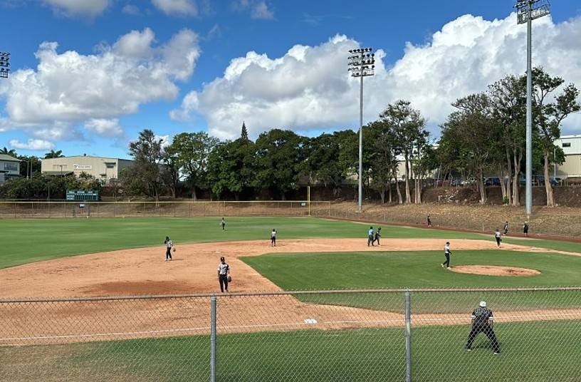

Hans L'Orange Neighborhood Park
Place: Hans L'Orange Neighborhood Park, Waipahu, Oʻahu
Type: Neighborhood park / former plantation recreation ground
Namesake: Hans L'Orange, longtime manager of Oʻahu Sugar Company
Story it tells: How a private Oʻahu Sugar Company recreation ground became a public neighborhood park while preserving the name of one of the plantation's longtime managers.

Hans L'Orange Neighborhood Park in Waipahu began as a recreation ground for Oʻahu Sugar Company workers and their families. In 1924, plantation manager Hans L'Orange persuaded the company to set aside several acres of low-yielding sugarcane land for recreational use. The grounds became a center of plantation community life, hosting sporting events, festivals, holiday gatherings and other activities.
L'Orange managed Oʻahu Sugar Company in Waipahu for about two decades and promoted organized recreation. The recreation grounds were later renamed Hans L'Orange Park in his honor, preserving his name in Waipahu many decades after the smokestacks of Waipahu stopped running.
The park developed into one of O‘ahu's best-known baseball fields, and generations of local players and spectators used the grounds. In 1995, the park was upgraded for Hawaiʻi Winter Baseball, a developmental league that brought professional prospects, including big names like Ichiro Suzuki and Jason Giambi, from Major League Baseball and Japan to Hawaiʻi. Hans L'Orange later hosted the league again after its brief revival beginning in 2006.
Oʻahu Sugar Company maintained the recreation grounds for decades before the City and County of Honolulu took over the park in 1968. The plantation itself continued operating in Waipahu until 1995, when Oʻahu Sugar closed after nearly a century of operation.
Today, baseball remains one of the defining features of Hans L'Orange Neighborhood Park. Its name remembers a plantation manager and an era when community events were woven into everyday plantation life in Waipahu.